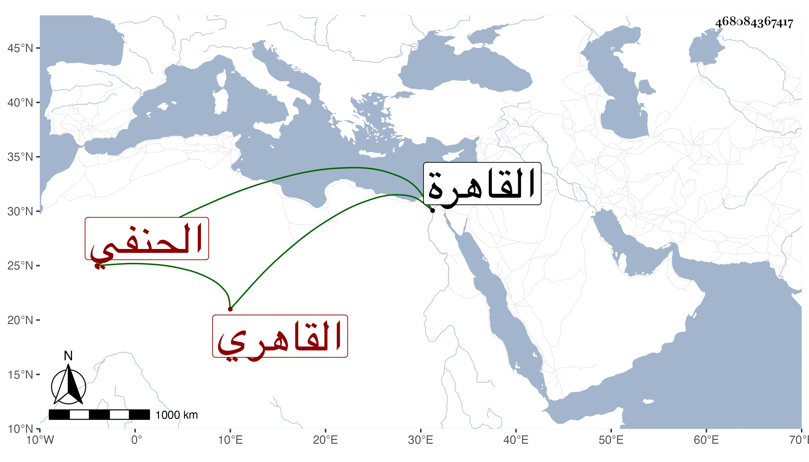

0902Sakhawi.DawLamic.ITO20230111-ara1.EIS1600.468084367417
Biography ID: 468084367417
641
علي بن أحمد بن محمد نور الدين القاهري الحنفي والد محمد الآتي ويعرف بالصوفي . ولد تقريبا سنة تسع وعشرين وثمانمائة بالقاهرة ونشأ بها يتيما فحفظ القرآن والعمدة والكنز والمنار ويقول العبد وألفية ابن مالك وعرض بعيد الأربعين فما بعدها على شيخنا ومستمليه والقاياتي والزين عبادة والمحب بن نصر الله في آخرين وعمل العرافة في مكتب السبيل بالأشرفية عند الشمس الكركي وتخرج به قليلا واشتغل فتفقه بابن الدويري والعضدي الصيرامي والشمني وابن الجندي والزين قاسم والشمس الكريمي والبرهان الهندي في آخرين وأكثر من ملازمة ثانيهم في ذلك وفي الأصلين وغيرها وكان مقيما عنده لتأديب بنيه ولغير ذلك ، وحج معه في سنة إحدى وخمسين وجاور التي تليها وسمع على أبي الفتح المراغي بل جود في القرآن على الزين بن عياش وكذا جوده على الزين طاهر وابن كزلبغا وعبد الرزاق الطرابلسي وكتب عليه وعلى البرهان الفرنوي وكذا لازم ابن الديري كثيرا جدا في الفقه وفي الأصول وفي التفسير والحديث وغيرها وكتب عنه قصيدة من نظمه فيها بدائع وأخذ عن الكريمي والهندي أيضا في الأصول وعن ابن الجندي والأبدي والخواص في العربية وقرأ على الخواص مقدمته في العروض والقوافي وأخذ مختصر شرح الشواهد عن مؤلفه العيني سماعا وكذا قراءة بل قرأ عليه شرحه لخطبة هذا المختصر وسمع عليه وعلى شيخنا وابن الديري والرشيدي وآخرين وأذن له غير واحد بالإفتاء والتدريس كابن الديري وذلك في سنة إحدى وستين وجلس ببابه فكان أحد أهل الحل والعقد هناك بل ناب عنه وعن من بعده في القضاء وسافر في سنة اثنتين وستين صحبة برسباي البجاسي على قضاء المحمل ثم جاور بعد أيضا سنة ثلاث وثمانين واستقر في تدريس الجانبكية برغبة العز عبد السلام البغدادي وفي الإعادة بالأبو بكرية برغبة الشمس الأمشاطي له عنه حبن أخذ مشيخة البرقوقية وفي تدريس المهمندارية برغبة الشمس الجلالي خازن المحمودية وفي تدريس الأقبغاوية بعد السيف بن الحوندار وفي تدريس الطحاوي بالمؤيدية بعد الأمين الأقصرائي وفي الإعادة بالمنصورية بعد أفضل الدين القرمي وفي الصرغتمشية وغيرها من الجهات وصار أحد أعيان النواب مع دربة وسياسة وعقل وتودد وخبرة بالأحكام والمصطلح ويقال أنه ينتمي للشمس محمد بن أحمد بن عمر السعودي أحد أعيان الحنفية الآتي في المحمدين وهو ممن كثر تردده إلي وعملت له مجلسا حين أخذ الطحاوي وكثرت مراجعته لي في ذلك وحمدت أدبه .
